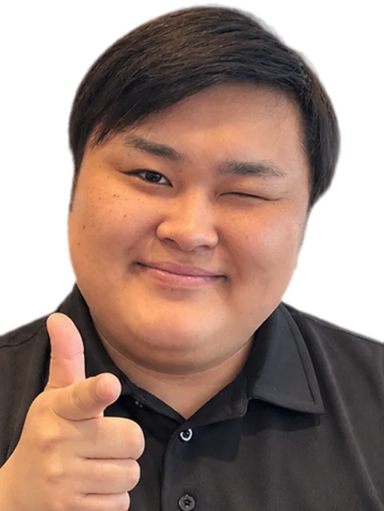
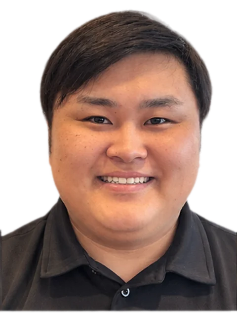
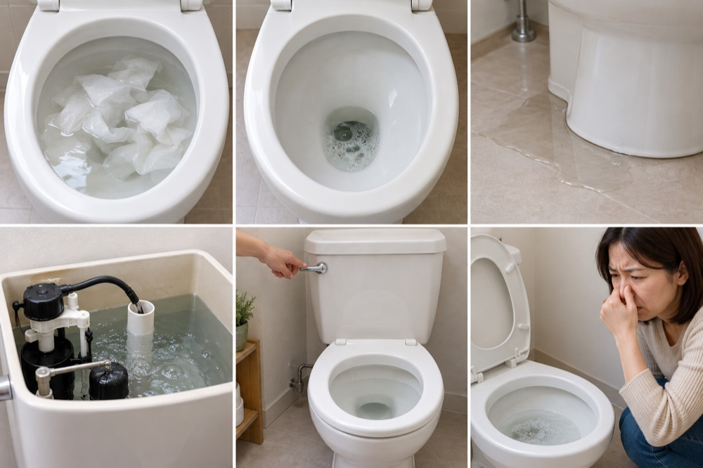
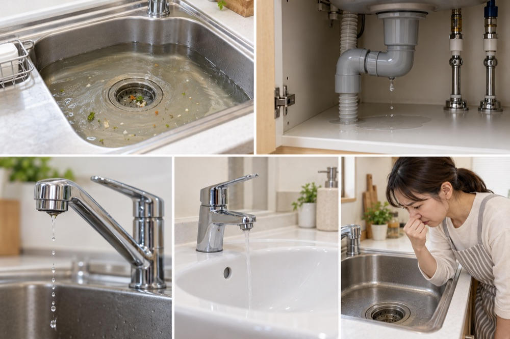
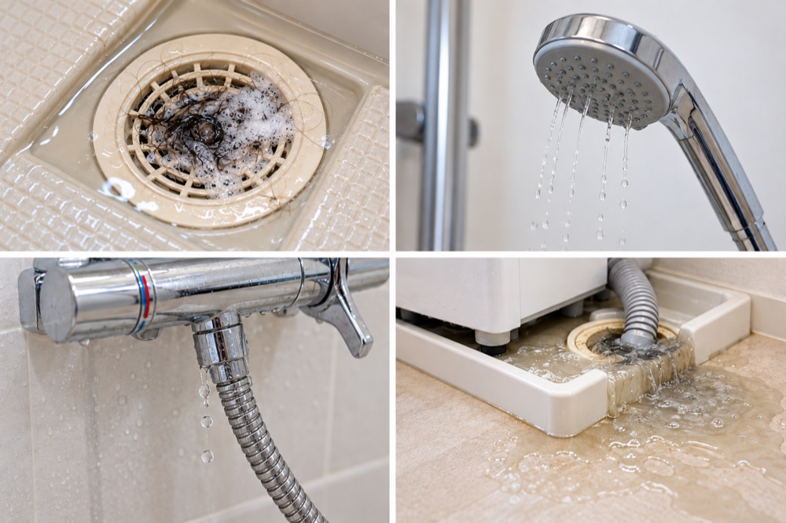
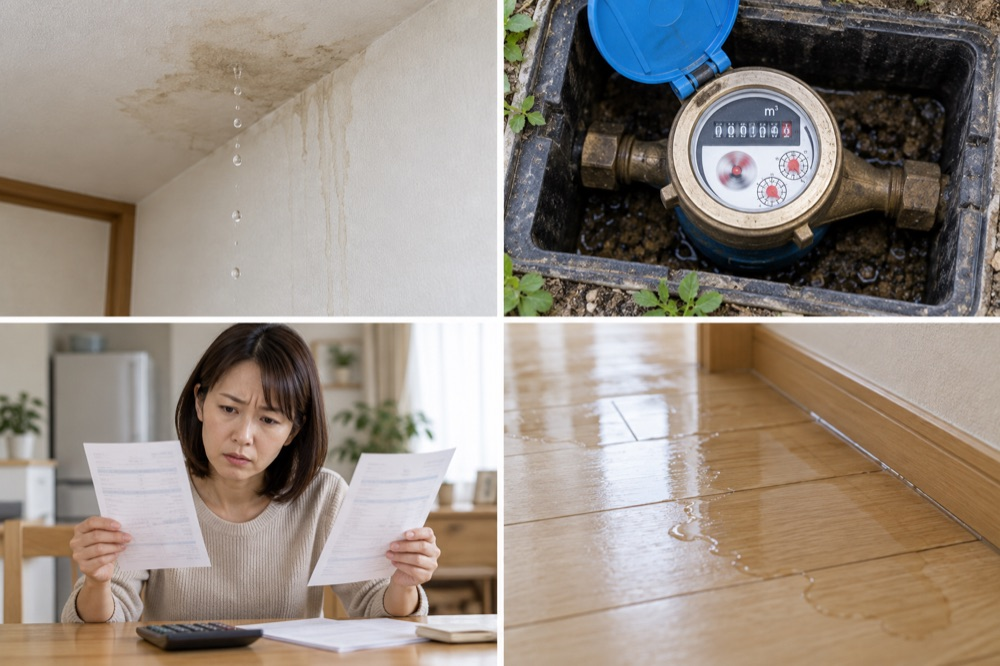
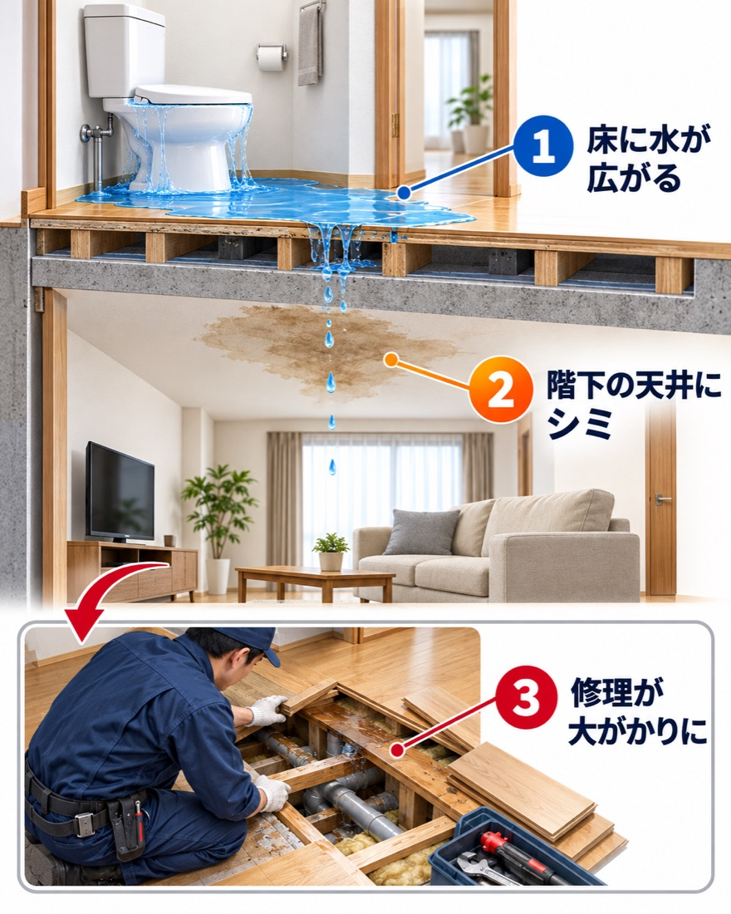

流れない…
あ

- お見積り
無料 - 作業の
前に 金額を お伝え - 断っても
OK
電話で、
聞くのは
お電話で
【無理な
先ず、
- もう
一度 レバーを 引かない流れないまま 流すと、 便器から 溢れます。 - 止水栓を
閉める便器の 横の 壁か 床から 出ている 細い 管の 根元を、 右に 回します。
止水栓が
こんな症状、
一つでも
電話してから、
知らない
だから、
伺う
1お電話で
- どこでトイレ・キッチンなど
- どんな
状態か見たままで 大丈夫です - ご住所町名まで
うまく
2その
- 電話の
あと到着の 目安を お伝えします【到着目安の 伝え方】 - 到着の
前伺う スタッフの 名前を、 お電話で お伝えします - 到着したら状態を
見て、 作業の 前に 金額を お見せしますこの時点では、まだ作業を始めません。 - 金額を
見て頼むか、 断るかを 決めてくださいお断りの 場合の 費用：【条件】
3よく
- 見積りだけでも、
お金が かかりますか？ - お見積りは【無料】です。
出張費は【扱い 】です。 - 来て
もらったら、 断りにくいのでは？ - 金額を
お見せした 段階で、 お断りいただいて 構いません。 その 場で 契約を 急が せる ことはしません。
ほかの
- 高い
金額を 請求されないか 心配です。 - ご了承いただいてから
作業を 始めます。 追加が 必要に なった 時は、 作業を 止めて、 理由と 金額を ご説明します。 - 夜中や
早朝でも、 電話していいですか？ - 24時間受付しています。
夜間・早朝の 加算は【0円：要確認】です。
首都圏でトイレの
アシスト株式会社にお任せ
状態に
トイレの
| トイレの | 3,000円〜 |
|---|---|
| タンク周りの | 3,000円〜 |
| ウォシュレットの | 5,000円〜 |
| 便器周りの | 5,000円〜 |
| 夜間・早朝の | 0円 |
キッチン・洗面所の
| 排水口の | 3,000円〜 |
|---|---|
| 蛇口の | 3,000円〜 |
| 蛇口の | 15,000円〜 |
| 排水管からの | 3,000円〜 |
お風呂の
| 浴室の | 3,000円〜 |
|---|---|
| シャワーヘッドの | 3,000円〜 |
| 浴槽の | 3,000円〜 |
| 給湯器の | 5,000円〜 |
給水管・排水管の
| 給水管の | 10,000円〜 |
|---|---|
| 排水管の | 10,000円〜 |
| 配管の | 20,000円〜 |
表示の
見積りの
金額は、【税込／税別】で
原因と、
水が
- 原因
- 【記載】
- 作業
- 【記載】
- 所要時間
- 【○分】
- 料金
- 【○円
（税込） 】
【お困りごと
- 原因
- 【記載】
- 作業
- 【記載】
- 所要時間
- 【記載】
- 料金
- 【記載】
ご依頼の

はるき
「慌てなくて
【姓・役職・経験年数・ひとこと
【名前】
【役職・経験年数・ひとこと
実際に
トイレ詰まりの
30代女性
夜に
キッチンの
40代男性
シンクの
ほかの
お風呂の
50代女性
蛇口から
洗面所の
40代女性
洗面所の
給湯器の
30代男性
お湯が
※お客様の
気に
詳しい
水が
- もう
一度 レバーを 引かないでください流れないま何度も 流すと、 便器から 溢れます。 - 止水栓を
閉めてください壁か 床から 出ている 細い 管の 根元に あります。 手か マイナスドライバーで 右に 回します。 - 床の
水を 拭いて、 お電話ください水が 引かない、 流れが 悪い、 音が するなど、 症状を そのまま お伝えください。
やってはいけない
- 熱湯を
注ぐ便器が 割れる おそれが あります - 針金や
棒で 突く配管を 傷つけてしまいます - 洗剤や
薬品を 何種類も 混ぜる有毒な ガスが 出て、 危険です
この
対応できる
対応できる
当ては

トイレTOILET
- 詰まりが
ひどく、 水が 流れない - 水位が
上がったり、 下がったりする - 便器の
周りから 水が 漏れる - タンクの
水が 止まらない - レバーを
引いても 流れない - 音やに
おいが 気に なる

キッチン・洗面所KITCHEN
- 排水口が
流れに くい - シンクの
下から 水が 漏れる - 蛇口から
水が 出ない ・止まらない - 水の
勢いが 弱くなった - 排水口からに
おいが する

お風呂・洗濯機BATH
- 排水口が
詰まっている - お湯や
水の 出が 悪い - シャワー周りから
水が 漏れる - 洗濯機の
排水が 溢れる

水漏れ・
- 天井や
壁から 水が 落ちてくる - 水道メーターが
回り続けている - 水道料金が
急に 上がった - 床が
濡れている
放って
放って
こうなることがあります。

- 1
床に
水が 広がる 溢れた
水は、 床材の 隙間から染み込みます。
乾いて見えても、中が湿ったままの ことがあります。 - 2
階下の
天井に シミ マンションでは、階下の天井にシミが
出て、
初めて気づくこともあります。 - 3
修理が
大が かりに 軽いうちなら、
作業は 短時間で 済みます。
放っておくほど、修理は大がかりに なります。
業者選びで
業者選びの
確認していただきたい
- 作業の前に、
金額を 提示してくれますか - 追加料金が
出る 条件を、 説明してくれるか - 会社名・所在地・連絡先が
明記されていますか - その
場で 契約を 急が せず、 お断りできますか
ご依頼の
料金・到着時間・
料金は、
詰まりの
目安は
見積りの
あります。
出張費は
【出張費の
電話してから、
最短15分が
見積りを
できます。
支払い
【現金／クレジットカード／電子マネー／請求書】
作業後に、
【保証期間と
すべての
今、
水が
水が
流すのを
- ① 便器の
横の 壁か 床から 出ている 細い 管の 根元 （止水栓）を、 右に 回して 閉めてください - ② ウォシュレットなど
電気の ついた機器が ある 場合は、 濡れた 手で 触らず、 コンセントが 濡れていなければ 抜いてください - ③ 床の
水を タオルで 拭いてください （階下への 漏水を 防ぐ ためです） - ④ 状況を
電話か LINEで お伝えください
止水栓を
止水栓が
無理な
それでも
止水栓や
一般的な
見つからない
流しても
便器の
- 流さないでください
- 止水栓を
閉めてください - 水位が
便器の 縁に 近いときは、 床に タオルや バケツを 置いて 備えてください
その
水位は
詰まりの
但し、
ゴボゴボと
配管の
直ぐに
トイレを
トイレ単体ではなく、
- トイレ・風呂・洗濯機・洗面の
水は、 いったん全て 使わないでください - マンションの
場合は、 管理会社に 連絡してください （共用部の 排水管は、 管理組合の 管理である ことが 多いためです）
その
便器の
詰まりではなく、
長期間
タンクの
これは
止水栓を
夜中や
24時間受付しています。
お電話の
自分で
やって
ラバーカップ
洋式用の、
- 便器の
水位が 低いときは、 カップが 水に 浸かるまで 水を 足してください （溢れない 量に してください） - 排水口に
カップを 密着させ、 ゆっくり押し込んで、 一気に 引いてください - これを
数回繰り返してください
強く
ラバーカップを
数回試して
続ける
熱湯を
使わないでください。
重曹や
軽い
時間を
市販の
トイレ用と
針金や
お勧めしません。
ペットボトルや
詰まりの
試して
自分で
- 止水栓を
閉めてください （流れ続けるのを 防ぐ ためです） - 床に
ビニールシートや 新聞紙を 敷いてください - ゴム手袋と
マスクを 着けてください - 便器の
水位が 高いときは、 無理に 作業しないでください
自分で
状態を
「試した
どこまで
次の
- ラバーカップを
数回試しても、 変わらない 場合 - 水位が
下がらない 場合、 または 溢れそうな 場合 - 固い
ものや 小物を 落とした 心当たりが ある 場合 - 何度も
繰り返して 詰まる 場合 - 他の
水まわりにも 症状が 出ている 場合
詰まりの
何が
トイレットペーパーを
紙が
変わらなければ、
流せる
「トイレに
作業では、
スマホ・
絶対に
- 止水栓を
閉めてください - 落とした
ものを、 そのまま お伝えください （ 大きさ・ 素材）
写真が
生理用品や、
水に
子どもが
何を
猫砂や、
商品に
食べ物や
油は、
既に
尿石で
あります。
何度も
原因は、
作業の
トイレの
タンクレスや
タンクレストイレでも
対応できます。
ウォシュレット
大丈夫です。作業前に
和式トイレでも
【対応可否】
古い
対応できます。
手洗い
手洗い
浄化槽の
浄化槽の
浄化槽の
汲み取り式や
【対応可否】
賃貸・マンション・戸建て7問
連絡先や
賃貸です。
設備の
但し、
費用は、
一般的には、
作業の
管理会社が
契約で
分譲マンションの
複数の
階下に
止水栓や元栓を
火災保険や、
契約内容に
大家さんや、
賃貸では、
料金・
金額の
「見積り
出張費・
夜間や
夜間・早朝の
作業後の
【当社の
見積書や
お出しします。
来て
到着時間や
予約は
【
作業中、
基本的に、
作業時間は、
詰まりの
便器の
事前に
- トイレの
床周りの 荷物を 片づけて おいてください - 止水栓を
閉めて おいてください （既に 閉めていれば、 そのままで 構いません） - 詰まりの
原因に 心当たりが あれば、 教えてください
作業中に、
【養生
作業後は、
女性ひとりの
【女性スタッフの
到着前に
作業の
【作業前後の
業者の
安心して
悪徳業者を
次の
- ① 作業の
前に、 金額を 提示してくれますか - ② 追加料金が
発生する 条件を、 説明してくれますか - ③ 会社名・所在地・固定の
連絡先が 分かりますか - ④ その
場で 急かさず、 お断りできますか - ⑤ 見積書や
領収書を 出してくれますか
広告の
広告の
見積書を
書面や、
契約した
ご自身で
トラブルに
消費者ホットライン
水道局の
詰まりの
当社の
会社の
この
損害賠償保険には
【加入の
作業後・再発防止5問
保証や
詰まりを
- 一度に
流す紙の 量を 減らしてください - 「流せる」シートでも、
何枚も 続けて 流さないでください - トイレに
流せない ものを 流さないでください - 長く
使っているなら、 定期的に 点検してください
作業後に、
作業が
尿石や
トイレ用の
作業後に、
直ぐに
定期点検や、
【定期点検の
水漏れ・
詰まり
便器の
便器と
タンクの
接続部の
家の
家の
冬に、
無理に
洗面所・キッチン・風呂の
【対応できる
見つかりませんでした。
最終更新：2026年10月23日／内容の
東京・埼玉・神奈川・
東京都
- 千代田区
- 中央区
- 港区
- 新宿区
- 文京区
- 台東区
- 墨田区
- 江東区
- 品川区
- 目黒区
- 大田区
- 世田谷区
- 渋谷区
- 中野区
- 杉並区
- 豊島区
- 北区
- 荒川区
- 板橋区
- 練馬区
- 足立区
- 葛飾区
- 江戸川区
- 多摩地域
神奈川県
- 横浜市
- 川崎市
- 相模原市
- 藤沢市
- 横須賀市
- 平塚市
- 厚木市
- その
他
埼玉県
- さいたま市
- 川口市
- 川越市
- 所沢市
- 越谷市
- 草加市
- 春日部市
- 上尾市
- その
他
千葉県
- 千葉市
- 船橋市
- 市川市
- 松戸市
- 柏市
- 浦安市
- 市原市
- その
他
LINEなら、写真を
詰まっている
- 1下の
ボタン、 または QRコードで友だち追加 - 2状況の写真と
ひとことを 送る - 3スタッフが目安を
お返事